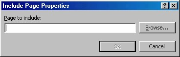

4 Include Content
Masih banyak koleksi Web Component yang bisa Anda gunakan. Berikut ini akan
dibahas satu kelompok lagi, bernama Include Content yang di dalamnya terdapat
empat jenis web component je nis include, antara lain Substitution, Pages, Page
Based On Schedule dan Picture Based On Schedule . Sebenarnya masih ada satu
lagi yaitu Page Banner, namun yang satu ini telah kita bahas pada bab Multimedia
dan animasi.
4.1 Informasi dokumen (Substitution)
Substitution, berguna untuk menyisipkan keterangan atau informasi tertentu pada
halaman, misalnya nama pengarang dokumen, uraian tentang dokumen, atau URL
dokumen. Langkah pemakaiannya adalah:
1. Tentukan halaman yang akan disisipi dengan Substitution.
2. Tuliskan teks, misalnya Diedit oleh:
3. Letakkan kursor setelah teks.
4. Lalu aktifkan Insert _ Web Component. Muncul kotak dialog Insert Web
Component.
Gambar 11.31 Pilihan Substitution
5. Pada bidang kiri klik Include Content, lalu pada bidang kanan klik
Substitution.Lihat Gambar 11.31 di atas.
6. Klik Finish, muncul kotak dialog Substitution Properties, yang
menyediakan pilihan keterangan yang akan disisipkan.
Gambar 11.32 Pilihan keterangan
7. Kemudian pada kotak daftar drop-down Substitute with pilihlah informasi
yang Anda inginkan untuk disisipkan, misalnya Author, kemudian klik OK.
Contoh hasilnya akan seperti Gambar 11.33
Gambar 11.33 Contoh hasil pemasangan include content - substituion - Author
Kalau Anda jalankan pada browser, hasilnya:
Gambar 11.34 Tampilan include content - substituion - Author pada browser
4.2 Penyisipan halaman (Page)
Selain menyisipkan keterangan tertentu, Anda bisa dengan mudah menyisipkan
sebuah halaman HTML ke dalam halaman lain (kita sebut saja halaman penampil).
Namun halaman sisipan ini tidak bisa Anda edit pada halaman penampil, kecuali
Anda membuka halaman sisipan tersebut secara tersendiri lalu mengeditnya.
Menyisipkan sebuah halaman hanya membutuhkan beberapa detik, inilah yang perlu
dilakukan:
1. Pada halaman penampil, tempatkan kursor pada lokasi yang Anda inginkan.
2. Lalu aktifkan Insert _ Web Component. Muncul kotak dialog Insert Web
Component.
3. Pada bidang kiri klik Include Content, lalu pada bidang kanan klik Page.Lihat
Gambar 11.35.
Gambar 11.35 Pilihan Include Content - Page
4. Lalu klik tombol Finish, kotak dialog Include Page Properties seperti Gambar
11.36 akan terbuka.

Gambar 11.36 Pilih file yang ingin Anda masukkan
5. Klik tombol Browse, tampil kotak dialog untuk pencaria n file. Lalu carilah file
yang ingin Anda masukkan.
Gambar 11.37 Kotak dialog pencarian file
6. Setelah file ditemukan, klik OK. File sisipan tersebut akan ditempatkan di dalam
dokumen Anda pada titik di mana kursor tersebut berada. Hasilnya tampak
seperti informasi biasa, seperti halnya jika Anda menempatkannya sendiri secara
langsung dengan cara menulis teks atau memasang gambar. Lihat Gambar 11.22.
Jika Anda menunjuk halaman sisipan tersebut dengan mouse, maka pointer mouse
akan berubah menjadi tangan memegang file.
Kalau Anda klik ganda bagian sisipan tersebut maka kotak dialog seperti Gambar
11.36 akan terbuka kembali.
Gambar 11.38 Halaman yang mengandung halaman sisipan
Web Component ini dirancang untuk memasukkan file -file yang terdapat di dalam
Web Anda.
Kalau dijalankan di web, hasilnya seperti Gambar 11.39.
Gambar 11.39 Halaman DOA.htm sebagai include
4.3 Penyisipan halaman secara otomatis (Pages Based On Schedule)
Pada bab sebelumnya Anda telah melihat bagaimana cara menjadwalkan penyisipan
gambar untuk waktu tertentu. Nah, sebenarnya Anda dapat melakukan hal yang
sama untuk penyisipan sebuah file halaman. Misalnya, Anda dapat mengeluarkan
pernyataan pers secara otomatis yang akan disisipkan ke dalam sebuah dokumen,
pada saat bersamaan dengan peluncuran sebuah produk, atau menyisipkan sebuah
pesan mengenai sebuah jadwal acara pada hari tertentu.
Cara penyisipannya sama dengan pada penyisipan file gambar, yaitu:
1. Tempatkan kursor pada lokasi yang Anda inginkan.
2. Lalu aktifkan Insert _ Web Component. Muncul kotak dialog Insert Web
Component.
Gambar 11.39 Pilihan Include Content - Page
7. Pada bidang kiri klik Include Content, lalu pada bidang kanan klik Page Based
On Schedule.Lihat Gambar 11.23 di atas.
8. Lalu klik tombol Finish, kotak dialog Scheduled Include Page Properties
seperti Gambar 11.40.
Gambar 11.40 Kotak dialog Scheduled Include Page Properties
9. Untuk memilih file, klik tombol Browse, tampil kotak dialog untuk pencarian
file. Lalu carilah file yang ingin Anda masukkan.
Gambar 11.41 Kotak dialog pencarian file
10. Setelah menemukan fil eyang Anda makasudkan, klik OK. Tampilan kembali ke
kotak dialog 9.40.
11. Anda bisa menyisipkan file lain (barangkali diperlukan sebagai pelengkap file
sisipan utama) dengan klik tombol Browse kedua.
12. Kemudian tentukan jadwal yang Anda inginkan pada kotak-kotak pilihan yang
tersedia. Baik pada kelompok Starting (untuk penentuan saat mulai) dan
Ending (penentuan saat akhir).
13. Setelah selesai dengan benar, klik OK. File itu akan ditempatkan di dalam
dokumen Anda pada titik di mana kursor tersebut berada sesuai jadwal yang
telah Anda tentukan.
4.4 Penyisipan gambar terjadwal (Picture Based on Schedule)
Meskipun telah dibahas secara detil pada bab sebelumnya yang membahas tentang
pemakaian gambar, berikut ini ringkasan pemakaian web component tentnag gambar
terjadwal:
1. Tempatkan kursor pada tempat yang Anda inginkan.
2. Aktifkan pilihan Insert _ Web Component. Kotak dialog Insert Web
Component akan terbuka.
3. Pada bidang kiri pilih Included Content dan pada bidang kanan pilihlah
Picture Based on Schedule .
4. Klik Finish, muncul kotak dialog penjadwalan tampilnya gambar.
5. Klik tombol Browse yang pertama untuk memilih gambar yang ingin Anda
tampilkan pada waktu dan tanggal yang Anda inginkan. Anda hanya dapat
memilih sebuah gambar yang sudah ada dalam web Anda.
6. Masukkan Starting, untuk menjadwalkan kapan gambar tersebut akan mulai
muncul pada halaman Anda.
7. Masukkan Ending untuk menjadwalkan kapan gambar tersebut akan
dikeluarkan dari halaman Anda.
8. Anda juga bisa mengklik tombol Browse ke-2 untuk memilih gambar
pengganti yang akan ditampilkan sebelum gambar terjadwal muncul pada
halaman, dan sesudah gambar tersebut dipindahkan.
9. Klik OK dan sebuah icon Broken Picture akan ditampilkan di tempat
gambar tersebut, atau mungkin gambarnya sendiri jika Starting Date dan
Time sudah dipenuhi.
Copyright © Herlan Lesmana
Created with the Freeware Edition of HelpNDoc: Single source CHM, PDF, DOC and HTML Help creation